Разворот · страницы 1–2
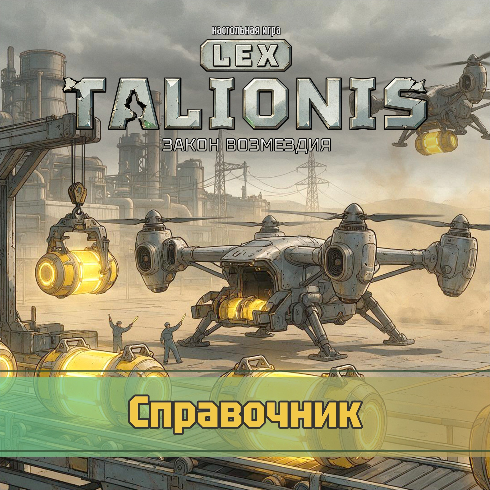
Свод правил 1.51.0. Наборы карт: задания 3.0.0, начальные задания 3.0.0, супер-задания 9.0.0, арсенал 9.0.0, начальный арсенал 9.0.0, супер-арсенал 4.1.0, контейнеры 6.0.0, рынок 4.0.0, приказы 6.0.0, свод 1.51.0, курс наград лист «Курс наград»: три числа из таблицы дизайнера, остальные — предположения.
Разворот · страницы 3–4
| Приказ | Верх: 2 действия | Низ: карта и одно её действие |
|---|---|---|
| ОСВОИТЬ | Добыча и Питание | НАСТУПАТЬ: Снабжение или Командование |
| МОБИЛИЗОВАТЬ | Питание и Снабжение | КОНТРОЛИРОВАТЬ: Командование или Развитие |
| НАСТУПАТЬ | Снабжение и Командование | ИССЛЕДОВАТЬ: Развитие или Добыча |
| КОНТРОЛИРОВАТЬ | Командование и Развитие | ОСВОИТЬ: Добыча или Питание |
| ИССЛЕДОВАТЬ | Развитие и Добыча | МОБИЛИЗОВАТЬ: Питание или Снабжение |
| Голубая | Красная | Зелёная | Жёлтая | |
|---|---|---|---|---|
| ОСВОИТЬ | — | +2 монеты | −1 монета → 1 карта задания | −1 монета → переместить 1 жетон войск |
| МОБИЛИЗОВАТЬ | +2 монеты | −1 монета → переместить 1 жетон войск | −1 монета → 1 боеприпас | −1 монета → 1 карта задания |
| НАСТУПАТЬ | −1 монета → переместить 1 жетон войск | −1 монета → 1 боеприпас | — | +2 монеты |
| КОНТРОЛИРОВАТЬ | −1 монета → 1 боеприпас | −1 монета → 1 карта задания | +2 монеты | — |
| ИССЛЕДОВАТЬ | −1 монета → 1 карта задания | — | −1 монета → переместить 1 жетон войск | −1 монета → 1 боеприпас |
| Действие | Первое на выбор | Второе на выбор |
|---|---|---|
| Добыча | Добыть: запитанные добытчики берут келемий или контейнеры | Построить добытчик |
| Питание | Переложить энергию | Построить энергостанцию |
| Снабжение | Выпустить: запитанные здания делают войска или боеприпасы | Построить военное здание |
| Командование | Манёвр | Бой |
| Развитие | Рынок | Наука |
надоИмей на поле 3 своих добытчика
наградана выбор: Построить добытчик или Питание
сверхИмей на поле 4 своих добытчика: 1 карта арсенала и два спец-действия
сжечьДействие «Добыть»
надоИмей свой добытчик на гексе, соседнем с гексом, где есть добытчик врага
наградана выбор: Добыча или Построить энергостанцию
сверхИмей свои добытчики на 2 разных гексах, соседних с гексами, где есть добытчик врага: 1 карта арсенала и два спец-действия
сжечьПостройте одно здание любого вида по его цене
надоВ ЭТОТ ХОД потрать 1 келемий
наградана выбор: Построить добытчик или Построить энергостанцию и два спец-действия
сжечьОбменяйте 1 келемий на 1 трофей
надоИмей на поле свои добытчики с суммой уровней 6 или больше
наградана выбор: Добыча или Питание и два спец-действия
сжечьДействие «Добыть»
надоИмей на поле 2 своих запитанных добытчика
наградана выбор: Построить добытчик или Питание
сверхИмей на поле 3 своих запитанных добытчика: 1 карта арсенала и три спец-действия
сжечьПостройте одно здание любого вида по его цене
надоИмей свои добытчики на 2 разных гексах, соседних с гексами, где есть здание врага
наградана выбор: Добыча или Построить энергостанцию
сверхИмей свои добытчики на 3 разных гексах, соседних с гексами, где есть здание врага: 1 карта арсенала и три спец-действия
сжечьОбменяйте 1 келемий на 1 трофей
надоВ ЭТОТ ХОД потрать 2 келемия
наградана выбор: Построить добытчик или Построить энергостанцию и три спец-действия
сжечьДействие «Добыть»
надоИмей на поле 3 своих энергостанции
наградана выбор: Питание или Снабжение
сверхИмей на поле 4 своих энергостанции: 1 карта арсенала и два спец-действия
сжечьДействие «Переложить энергию» или перенос модулей на планшете войск
Разворот · страницы 5–6
надоИмей свою энергостанцию на гексе, соседнем с гексом, где есть добытчик врага
наградана выбор: Построить энергостанцию или Снабжение
сверхИмей свои энергостанции на 2 разных гексах, соседних с гексами, где есть добытчик врага: 1 карта арсенала и два спец-действия
сжечь∞ Переложите любые свои модули на планшете войск
надоВ ЭТОТ ХОД запитай 2 своих здания
наградана выбор: Питание или Построить военное здание и 2 монеты и два спец-действия
сжечьЩит на технику или авиацию: снимает первое попадание по жетону этого рода
надоИмей на поле свои добытчики и энергостанции с суммой уровней 10 или больше
наградана выбор: Построить энергостанцию или Построить военное здание и два спец-действия
сжечьДействие «Переложить энергию» или перенос модулей на планшете войск
надоИмей на поле свои энергостанции 3 разных уровней
наградана выбор: Питание или Снабжение и два спец-действия
сжечь∞ Переложите любые свои модули на планшете войск
надоИмей в ячейках своих зданий 4 кубика энергии
наградана выбор: Построить энергостанцию или Снабжение и два спец-действия
сжечьЩит на технику или авиацию: снимает первое попадание по жетону этого рода
надоИмей на поле не меньше 2 своих добытчиков, и все они запитаны
наградана выбор: Питание или Построить военное здание и 2 монеты и два спец-действия
сжечьДействие «Переложить энергию» или перенос модулей на планшете войск
надоВ ЭТОТ ХОД построй добытчик или энергостанцию 3-го уровня или выше
наградана выбор: Построить энергостанцию или Построить военное здание и 2 монеты и два спец-действия
сжечь∞ Переложите любые свои модули на планшете войск
надоИмей на поле 3 своих запитанных энергостанции
наградана выбор: Питание или Снабжение
сверхИмей на поле 4 своих запитанных энергостанции: 1 карта арсенала и два спец-действия
сжечьЩит на технику или авиацию: снимает первое попадание по жетону этого рода
надоИмей на поле не меньше 2 своих зданий, и все они запитаны
наградана выбор: Построить энергостанцию или Снабжение и 2 монеты и два спец-действия
сжечьДействие «Переложить энергию» или перенос модулей на планшете войск
надоИмей на поле 2 своих военных здания
наградана выбор: Снабжение или Бой
сверхИмей на поле 3 своих военных здания: 1 карта арсенала и два спец-действия
сжечьДействие «Выпустить» одним вашим зданием
надоИмей своё военное здание на гексе, соседнем с гексом, где есть здание врага
наградана выбор: Построить военное здание или Бой
сверхИмей свои военные здания на 2 разных гексах, соседних с гексами, где есть здание врага: 1 карта арсенала и два спец-действия
сжечьПоставьте на поле 1 жетон войск из запаса
надоИмей не меньше 3 боеприпасов
наградана выбор: Снабжение или Манёвр и два спец-действия
сжечьВ чужой ход: когда атакуют ваш жетон, возьмите 2 боеприпаса
надоВ ЭТОТ ХОД выпусти 2 боеприпаса
наградана выбор: Построить военное здание или Манёвр и три спец-действия
сжечьЩит на пехоту или авиацию: снимает первое попадание по жетону этого рода
надоИмей на поле свои войска 3 разных родов
наградана выбор: Снабжение или Бой и 2 монеты и два спец-действия
сжечьДействие «Выпустить» одним вашим зданием
надоИмей не меньше 2 боеприпасов и на поле 3 своих войска
наградана выбор: Построить военное здание или Бой и 2 монеты и два спец-действия
сжечьПоставьте на поле 1 жетон войск из запаса
надоИмей не меньше 2 боеприпасов
наградана выбор: Снабжение или Манёвр и два спец-действия
сжечьВ чужой ход: когда атакуют ваш жетон, возьмите 2 боеприпаса
надоИмей на поле свои войска 2 разных родов
наградана выбор: Построить военное здание или Манёвр и 2 монеты
сжечь∞ +1 спец-действие до конца хода
надоИмей свои военные здания на 2 разных гексах, соседних с гексами, где есть войско врага
наградана выбор: Снабжение или Бой
сверхИмей свои военные здания на 3 разных гексах, соседних с гексами, где есть войско врага: 1 карта арсенала и три спец-действия
сжечьЩит на пехоту или авиацию: снимает первое попадание по жетону этого рода
Разворот · страницы 7–8
надоИмей на поле 2 своих жетона техники
наградана выбор: Бой или Наука и 1 трофей
сверхИмей на поле 3 своих жетона техники: 1 карта арсенала и два спец-действия
сжечьДействие «Манёвр»
надоИмей свой жетон авиации на гексе, соседнем с гексом, где есть войско врага
наградана выбор: Манёвр или Рынок и 1 трофей
сверхИмей свои жетоны авиации на 2 разных гексах, соседних с гексами, где есть войско врага: 1 карта арсенала и два спец-действия
сжечьДействие «Бой», в которой атакует один ваш жетон войск
надоВ ЭТОТ ХОД сыграй «Бой» и «Наука»
наградана выбор: Бой или Рынок и 1 трофей и три спец-действия
сжечьВ чужой ход: в чужом Бою уведите один свой жетон с атакуемого гекса на соседний
надоВ ЭТОТ ХОД уничтожь жетон врага
наградана выбор: Манёвр или Наука и 1 трофей
сверхУничтожь 2 жетона врага: 1 карта арсенала и три спец-действия
сжечь+1 к скорости одного рода войск до конца хода
надоИмей на поле 2 своих жетона авиации
наградана выбор: Бой или Наука и 1 трофей
сверхИмей на поле 3 своих жетона авиации: 1 карта арсенала и два спец-действия
сжечьДействие «Манёвр»
надоИмей свои войска на 2 разных гексах, соседних с гексами, где есть добытчик врага
наградана выбор: Манёвр или Рынок и 1 трофей
сверхИмей свои войска на 3 разных гексах, соседних с гексами, где есть добытчик врага: 1 карта арсенала и два спец-действия
сжечьДействие «Бой», в которой атакует один ваш жетон войск
надоВ ЭТОТ ХОД уничтожь здание врага
наградана выбор: Бой или Рынок и 1 трофей
сверхУничтожь 2 здания врага: 1 карта арсенала и три спец-действия
сжечьВ чужой ход: в чужом Бою уведите один свой жетон с атакуемого гекса на соседний
надоИмей на поле 2 своих жетона пехоты
наградана выбор: Манёвр или Наука и 1 трофей
сверхИмей на поле 3 своих жетона пехоты: 1 карта арсенала и два спец-действия
сжечь+1 к скорости одного рода войск до конца хода
надоИмей свой жетон техники на гексе, соседнем с гексом, где есть здание врага
наградана выбор: Бой или Наука и 1 трофей
сверхИмей свои жетоны техники на 2 разных гексах, соседних с гексами, где есть здание врага: 1 карта арсенала и два спец-действия
сжечьДействие «Манёвр»
надоИмей на поле 4 своих войска
наградана выбор: Манёвр или Рынок и 1 трофей
сверхИмей на поле 5 своих войск: 1 карта арсенала и два спец-действия
сжечьДействие «Бой», в которой атакует один ваш жетон войск
надоИмей не меньше 8 монет
наградана выбор: Наука или Добыча и два спец-действия
сжечьДействие «Рынок»
надоИмей 2 установленные карты арсенала
наградана выбор: Рынок или Построить добытчик
сверхИмей 3 установленные карты арсенала: 1 карта арсенала и два спец-действия
сжечьДействие «Наука»
надоВ ЭТОТ ХОД выполни это задание вторым спец-действием хода
наградана выбор: Наука или Построить добытчик и три спец-действия
сжечьОдин обмен Научного отдела или один обмен планшета рынка
надоИмей кубики науки на 2 треках
наградана выбор: Рынок или Добыча и два спец-действия
сжечьДействие «Рынок»
надоИмей на планшете войск 2 модуля
наградана выбор: Наука или Добыча и 2 монеты и два спец-действия
сжечьДействие «Наука»
надоИмей не меньше 2 келемия
наградана выбор: Рынок или Построить добытчик и два спец-действия
сжечьОдин обмен Научного отдела или один обмен планшета рынка
надоИмей кубики науки на 1 треке на ступени 3 или выше
наградана выбор: Наука или Построить добытчик и два спец-действия
сжечьДействие «Рынок»
надоИмей на планшете войск 1 золотой модуль
наградана выбор: Рынок или Добыча и три спец-действия
сжечьДействие «Наука»
надоИмей не меньше 2 трофеев
наградана выбор: Наука или Добыча и 2 монеты и два спец-действия
сжечьОдин обмен Научного отдела или один обмен планшета рынка
надоИмей 3 установленные карты арсенала
наградана выбор: Рынок или Построить добытчик и 2 монеты и два спец-действия
сжечьДействие «Рынок»
Разворот · страницы 9–10
надоИмей свой жетон пехоты на гексе, соседнем с гексом, где есть ЦУ врага
наградана выбор: Бой или Наука и 1 трофей
сверхИмей свои жетоны пехоты на 2 разных гексах, соседних с гексами, где есть ЦУ врага: 1 карта арсенала и два спец-действия
сжечьВ чужой ход: в чужом Бою уведите один свой жетон с атакуемого гекса на соседний
надоИмей на поле 4 своих запитанных энергостанции
наградана выбор: Питание или Снабжение и 2 монеты и два спец-действия
сжечь∞ Переложите любые свои модули на планшете войск
надоИмей в ячейках своих зданий 6 кубиков энергии
наградана выбор: Построить энергостанцию или Снабжение и 2 монеты и два спец-действия
сжечьЩит на технику или авиацию: снимает первое попадание по жетону этого рода
надоИмей на поле 3 своих жетона техники
наградана выбор: Манёвр или Наука и 1 трофей
сверхИмей на поле 4 своих жетона техники: 1 карта арсенала и три спец-действия
сжечь+1 к скорости одного рода войск до конца хода
надоИмей на поле не меньше трёх своих зданий, считая ЦУ
наградатрофей и карта задания
сжечь1 боеприпас
Считается и ЦУ, поэтому от подготовки до выполнения ровно две стройки.
надоВ ЭТОТ ХОД найми войско любого рода, кроме вышки
наградатрофей и карта задания
сжечь1 монета
Вышка не считается: её ЦУ собирает даром, и наймом это назвать нельзя.
надоИмей не менее трёх боеприпасов в хранилище
наградатрофей и карта задания
сжечь1 боеприпас
Порог три, а не два: один боеприпас у тебя уже есть с подготовки.
надоВ ЭТОТ ХОД в действие Рынок воспользуйся предложением карты на рынке
наградатрофей и карта задания
сжечь1 монета
Напечатанный обмен планшета не подходит: нужно предложение с открытой карты рынка.
надоИмей на поле запитанное здание на расстоянии в 2 гекса от твоего ЦУ
наградатрофей и карта задания
сжечь1 боеприпас
Энергия туда сама не дотянется: её надо развести Питанием.
надоИмей на поле войска на расстоянии в 2 гекса от твоего ЦУ
наградатрофей и карта задания
сжечь1 монета
Вышка неподвижна, так что выйти придётся кем-то живым.
надоИмей не меньше трёх келемия в хранилище
наградатрофей и карта задания
сжечь1 боеприпас
Келемий равен победному очку, поэтому держать его дорого, а тратить жалко.
надоИмей у себя на свалке хотя бы один жетон
наградатрофей и карта задания
сжечь1 монета
Трофей берут только с боя, поэтому карта платит за первый настоящий выстрел.
Разворот · страницы 11–12
надоСтой хотя бы на первом шаге любого трека технологий
наградатрофей и карта задания
сжечь1 боеприпас
За действие Наука больше одного шага на трек не сделать, поэтому начинают все с одного и того же.
надоИмей у себя в запасе хотя бы 2 неоткрытых контейнера
наградатрофей и карта задания
сжечь1 монета
Вскрытый контейнер сразу уходит, так что придётся терпеть и не открывать.
надоВ ЭТОТ ХОД получи действие с нижнего приказа своей карты приказа
наградатрофей и карта задания
сжечь1 боеприпас
Нижний приказ открывается не всегда, так что карту держат до подходящего раунда.
надоВ ЭТОТ ХОД сыграй тот же основной приказ, что и другой игрок
наградатрофей и карта задания
сжечь1 монета
Совпавший приказ не срабатывает, так что эта карта — плата за потерянное действие.
установкаКаждый раз, когда играешь любую ветку Питания, получи ещё одно спец-действие. Не больше 1 раза за ход.
сжечь2 боеприпаса
установкаКаждый раз, когда играешь ветку «Бой», получи ещё одно спец-действие. Не больше 1 раза за ход.
сжечь2 боеприпаса
установкаКаждый раз, когда играешь ветку «Выпустить», получи ещё одно спец-действие. Не больше 1 раза за ход.
сжечь1 келемий и действие «Добыть» одним добытчиком
установкаКаждый раз, когда твой приказ совпадает с чужим, получи ещё одно спец-действие. Не больше 1 раза за ход.
сжечь1 келемий и действие «Добыть» одним добытчиком
установкаКаждый раз, когда играешь ветку «Рынок», получи ещё одно спец-действие. Не больше 1 раза за ход.
сжечь1 келемий и действие «Добыть» одним добытчиком
установкаКаждый раз, когда сжигаешь карту, получи ещё одно спец-действие. Не больше 1 раза за ход.
сжечьПострой 1 любое здание за 1 монету
установкаКаждый раз, когда играешь любую ветку Добычи, можешь заплатить 1 келемий: нанеси 1 урон жетону врага на гексе со своим войском или соседнем с ним. Не больше 1 раза за ход.
сжечьПострой 1 любое здание за 1 монету
установкаКаждый раз, когда играешь любую ветку Питания, можешь заплатить 1 келемий: сыграй ветку «Выпустить». Не больше 1 раза за ход.
сжечьПострой 1 любое здание за 1 монету
установкаКаждый раз, когда играешь ветку «Выпустить», можешь заплатить 1 келемий: получи 1 трофей. Не больше 1 раза за ход.
сжечьДействие «Наука»; ступень оплатите монетами вместо трофеев
установкаКаждый раз, когда играешь любую ветку Командования, можешь заплатить 1 келемий: получи 2 боеприпаса. Не больше 1 раза за ход.
сжечьДействие «Наука»; ступень оплатите монетами вместо трофеев
Разворот · страницы 13–14
установкаКаждый раз, когда играешь ветку «Наука», можешь заплатить 1 келемий: сыграй ветку «Манёвр». Не больше 1 раза за ход.
сжечьДействие «Бой»
установкаКаждый раз, когда сжигаешь карту, можешь заплатить 1 келемий: сыграй ветку «Переложить энергию». Не больше 1 раза за ход.
сжечьДействие «Бой»
установкаКаждый раз, когда играешь ветку «Построить добытчик», нанеси 1 урон жетону врага на гексе со своим войском или соседнем с ним. Не больше 1 раза за ход.
сжечьДействие «Выпустить»
установкаКаждый раз, когда играешь любую ветку Питания, передвинь своё войско на соседний гекс. Не больше 1 раза за ход.
сжечьДействие «Выпустить»
установкаКаждый раз, когда играешь ветку «Выпустить», забери у одного врага 1 монету. Не больше 1 раза за ход.
сжечь3 монеты
установкаКаждый раз, когда играешь ветку «Манёвр», нанеси 1 урон жетону врага на гексе со своим войском или соседнем с ним. Не больше 1 раза за ход.
сжечь3 монеты
установкаКаждый раз, когда играешь ветку «Наука», забери у одного врага 1 боеприпас. Не больше 1 раза за ход.
сжечьПоставьте из запаса 2 жетона войск разных родов на любой гекс
установкаКаждый раз, когда сжигаешь карту, передвинь своё войско на соседний гекс. Не больше 1 раза за ход.
сжечьПоставьте из запаса 2 жетона войск разных родов на любой гекс
установкаКаждый раз, когда играешь ветку «Построить добытчик», замени свой добытчик на поле жетоном на уровень выше из запаса за 1 монету. Не больше 1 раза за ход.
сжечьЗаплатите 1 келемий и позолотите свой модуль
установкаКаждый раз, когда играешь ветку «Добыть», получи 1 боеприпас. Не больше 2 раз за ход.
сжечьЗаплатите 1 келемий и позолотите свой модуль
установкаКаждый раз, когда играешь ветку «Добыть», получи по келемию за каждый свой запитанный добытчик (не больше 2). Не больше 1 раза за ход.
сжечьЗаберите у первого игрока фишку первого игрока и 1 монету
установкаКаждый раз, когда строишь добытчик или энергостанцию 3-го уровня или выше, получи по монете за каждый свой запитанный добытчик (не больше 3). Не больше 1 раза за ход.
сжечьДо трёх спец-действий
установкаКаждый раз, когда строишь добытчик или энергостанцию 3-го уровня или выше, получи по монете за каждый уровень своего старшего добытчика. Не больше 1 раза за ход.
сжечьЗаберите у первого игрока фишку первого игрока и 1 монету
установкаКаждый раз, когда играешь любую ветку Добычи, получи 1 трофей. Не больше 2 раз за ход.
сжечьЗаберите у первого игрока фишку первого игрока и 1 монету
установкаКаждый раз, когда играешь ветку «Построить энергостанцию», получи 1 трофей. Не больше 1 раза за ход.
сжечьДо трёх спец-действий
установкаКаждый раз, когда играешь ветку «Построить энергостанцию», получи по монете за каждый свой запитанный добытчик (не больше 3). Не больше 1 раза за ход.
сжечьЗаберите у соперника до 2 карт заданий
установкаКаждый раз, когда играешь ветку «Переложить энергию», получи по келемию за каждое своё запитанное здание (не больше 2). Не больше 1 раза за ход.
сжечьЗаберите у соперника до 2 карт заданий
установкаКаждый раз, когда играешь ветку «Переложить энергию», получи по монете за каждое своё запитанное здание (не больше 3). Не больше 1 раза за ход.
сжечьЗамените карту приказа в руке на одну из сыгранных
установкаКаждый раз, когда играешь ветку «Построить военное здание», получи 2 монеты. Не больше 2 раз за ход.
сжечьЗамените карту приказа в руке на одну из сыгранных
установкаКаждый раз, когда играешь любую ветку Снабжения, получи 1 боеприпас. Не больше 1 раза за ход.
сжечьЗаберите у соперника закрытую карту арсенала
установкаКаждый раз, когда играешь ветку «Построить военное здание», получи 1 боеприпас. Не больше 1 раза за ход.
сжечьЗаберите у соперника закрытую карту арсенала
Разворот · страницы 15–16
установкаКаждый раз, когда играешь любую ветку Снабжения, передвинь своё войско на соседний гекс. Не больше 1 раза за ход.
сжечьОдно предложение карты рынка из сброса
установкаКаждый раз, когда играешь ветку «Манёвр», получи по монете за каждый уровень своего старшего добытчика. Не больше 1 раза за ход.
сжечьПоставьте из запаса пехоту и технику на пустой гекс
установкаКаждый раз, когда твой жетон уничтожают, получи 2 монеты. Не больше 2 раз за ход.
сжечьПоставьте из запаса пехоту и технику на пустой гекс
установкаКаждый раз, когда твой жетон уничтожают, получи 1 боеприпас. Не больше 2 раз за ход.
сжечьСбросьте установленную карту арсенала соперника
установкаКаждый раз, когда играешь любую ветку Командования, сними 1 урон со своего жетона. Не больше 1 раза за ход.
сжечьСбросьте установленную карту арсенала соперника
установкаВ начале своего хода получи ещё одно спец-действие.
сжечьДействие «Бой»
установкаВ начале своего хода получи ещё одно спец-действие.
сжечьОдно предложение карты рынка, келемий за него — из общего запаса
установкаВ начале своего хода получи ещё одно спец-действие.
сжечьОдно предложение карты рынка, келемий за него — из общего запаса
установкаВ начале своего хода получи ещё одно спец-действие.
сжечьДействие «Манёвр»
старт1 боеприпас и 1 монета
установкаСчитай эту карту отдельным источником энергии с одним кубиком. В фазу Обновление заплати 1 монету, иначе удали карту из игры.
старт1 келемий и 1 монета
установкаЕсли тебя контратаковали и уничтожили твой жетон — получи 1 боеприпас.
старт2 монеты
установкаСПЕЦ, −1 монета: Когда твои войска на гексе со зданием противника — забери у него 1 боеприпас или 1 келемий.
старт2 карты задания
установкаТвои добытчики и энергостанции с прочностью 1 имеют прочность 2. Получив урон, такое здание сразу после боя возвращается тебе в запас.
старт1 трофей и 1 монета
установкав конце Боя, если уничтожил хотя бы один жетон — 1 монета
старт1 модуль из мешочка на выбор
установкаСПЕЦ: 2 монеты — замени на поле один свой жетон наземного войска на другой наземный жетон из запаса
старт1 монета и 1 карта задания
установкаКаждый раз, когда выполняешь задание, получи 1 трофей. Не больше 2 раз за ход.
старт1 келемий и 1 боеприпас
установкаКаждый раз, когда устанавливаешь карту арсенала, получи 2 монеты. Не больше 1 раза за ход.
Разворот · страницы 17–18
даётПолучи 1 монету.
даётПолучи 1 боеприпас.
даётВозьми 1 карту задания.
даётПолучи 1 келемий.
даётПолучи 1 трофей.
даётПолучи 1 монету и 1 боеприпас.
даётВозьми 1 карту задания и получи 1 боеприпас.
даётВозьми 1 карту задания и получи 1 келемий.
даётВозьми 2 карты задания.
даётПолучи 2 монеты.
даётПолучи 2 боеприпаса.
даётВозьми 1 карту обычного арсенала из колоды.
даётПоставь 1 жетон техники из своего запаса на любой гекс, где нет чужих войск. Запас пуст — ничего не ставится.
даётПоставь 1 жетон пехоты из своего запаса на любой гекс, где нет чужих войск. Запас пуст — ничего не ставится.
слеваПоставьте из запаса 2 жетона войск разных родов на один гекс
справа5 монет
слева5 монет
справа2 карты арсенала
слева2 карты арсенала
справаДействие «Манёвр»
слеваДействие «Манёвр»
справаДействие «Переложить энергию»
слеваДействие «Переложить энергию»
справа3 боеприпаса
слева3 боеприпаса
справаПосмотрите 4 верхние карты заданий, 2 оставьте, 2 сбросьте
слеваПосмотрите 4 верхние карты заданий, 2 оставьте, 2 сбросьте
справаДействие «Бой»
слеваДействие «Бой»
справаПоставьте из запаса 2 жетона войск разных родов на один гекс
слева5 монет
справаДействие «Переложить энергию»
слева3 боеприпаса
справа2 карты арсенала
Разворот · страницы 19–20
по ★За каждые 3 своих здания на поле
по ★★За каждое своё здание на гексе с чужим зданием
по ★За каждые 2 своих войска на поле
по ★★За каждое своё войско на гексе с чужим зданием
по ★За каждый род своих войск на поле
по ★★За каждую четвёрку своих войск на поле: пехота, техника, авиация и вышка
по ★За каждый свой модуль боя и сборки на планшете войск
по ★★За каждый свой модуль золотой стороной вверх
по ★За каждый свой кубик на треках технологий
по ★★За каждый свой кубик на третьей ступени и на вершине трека
по ★За каждые 2 кубика в своём хранилище
по ★★За каждую тройку в своём хранилище: келемий, боеприпас и трофей
по ★За каждую свою установленную карту арсенала
по ★★За каждую свою карту супер-арсенала
по ★За каждые 2 монеты в своём запасе
по ★★За каждый келемий в своём хранилище
по ★За каждое своё запитанное здание
по ★★За каждое своё запитанное здание с двумя ячейками энергии
по ★За каждый свой добытчик, стоящий на секторе с контейнером
по ★★За каждое своё военное здание или ЦУ, закрывающее сектор с контейнером
по ★За каждые 2 гекса со своими жетонами
по ★★За каждый трек, где твой кубик стоит выше всех чужих
по ★За каждую свою казарму, завод и авиабазу на поле
по ★★За каждый жетон на своей свалке
картаСУПЕР-ПЕХОТА. Атака: 1 боеприпас — 1 урон. Скорость 2.
Спец-действие, −1 боеприпас: уничтожь здание на гексе с супер-пехотой.
Звезда: 1 победное очко.
смыслПодрывник: заходит на гекс с чужим зданием и за один боеприпас сносит его без боя.
картаСУПЕР-ТЕХНИКА. Прочность 3. Атака: 1 боеприпас — 1 урон.
Спец-действие: собери келемий с гекса, соседнего с супер-техникой.
Звезда: 1 победное очко.
смыслТанк-добытчик: снимает келемий с соседней жилы сам, без добытчика и без энергии.
картаСУПЕР-АВИАЦИЯ. Атака: 1 боеприпас — 1 урон.
Спец-действие: перемести супер-авиацию и любые жетоны с её гекса на соседний.
Звезда: 1 победное очко.
смыслТранспорт: переносит целый гекс войск на соседний — свои отряды за стену или чужие прочь с дороги.
картаСУПЕР-ВЫШКА. Атака: 1 боеприпас — 1 урон.
Спец-действие, −1 боеприпас: нанеси супер-вышкой по 1 урону на каждый соседний гекс.
Звезда: 1 победное очко.
смыслКольцевой залп: один боеприпас — и урон по всем соседям разом.
картаШТАБНАЯ ДИРЕКТИВА. ∞
При совпадении приказов ты играешь оба действия.
За совпадение нижнего приказа ты получаешь ещё 1 спец. действие.
Звезда: 1 победное очко.
смыслШтаб, которому не мешают соседи: совпадение верхнего приказа больше не режет ход до одного действия, а открытый нижний приказ добавляет к действию ещё и спец-действие.
картаКЕЛЕМИЕВЫЙ РУДНИК. ∞
Получай 1 келемий из общего запаса каждый раз, когда выполняешь действие «Добыча».
Звезда: 1 победное очко.
смыслСвоя жила: каждая Добыча приносит кубик сверх того, что взяли добытчики, — даже если добытчики стоят без дела.
Разворот · страницы 21–22
картаОРУЖЕЙНЫЙ КОНВЕЙЕР. ∞
Получай 1 боеприпас из общего запаса каждый раз, когда выполняешь действие «Снаряжение».
Звезда: 1 победное очко.
смыслПара к «Келемиевому руднику» для военной руки: каждое Снаряжение даёт боеприпас сверх того, что сделали здания.
картаБРОНИРОВАННЫЕ ЦЕХА. ∞
Твои здания: +1 прочности.
Звезда: 1 победное очко.
смыслКаждое здание держит на одно попадание больше: добытчик и энергостанция переживают одиночный выстрел, ЦУ выдерживает четыре.
| Красные | Зелёные | Синие | Жёлтые | |
|---|---|---|---|---|
| Войска: скорость · прочность · цель специальной атаки | ||||
| Пехота | 3 · 2 · здания и вышки | 2 · 2 · пехота | 2 · 1 · авиация | 2 · 1 · техника |
| Техника | 2 · 2 · здания и вышки | 2 · 2 · здания и вышки | 2 · 1 · пехота | 3 · 1 · авиация |
| Авиация | 2 · 1 · пехота | 3 · 1 · техника | 2 · 2 · техника | 2 · 1 · здания и вышки |
| Вышка | 0 · 1 · техника | 0 · 1 · авиация | 1 · 1 · здания и вышки | 0 · 1 · пехота |
| Здания: цена · ячейки энергии · прочность · выпуск (боеприпасы или войска) | ||||
| Казарма | 3 · 1 · 2 · 1/2 | 2 · 1 · 1 · 2/1 | 2 · 1 · 2 · 1/1 | 1 · 2 · 1 · 1/1 |
| Завод | 2 · 2 · 2 · 1/1 | 3 · 1 · 2 · 1/2 | 1 · 2 · 2 · 1/1 | 3 · 1 · 1 · 1/2 |
| Авиабаза | 1 · 1 · 2 · 2/1 | 1 · 2 · 2 · 1/1 | 3 · 2 · 3 · 1/2 | 2 · 1 · 1 · 2/1 |
| ЦУ | — · 1 · 3 · 2/0 | — · 1 · 3 · 2/0 | — · 1 · 3 · 1/1 | — · 1 · 3 · 2/0 |
Сильнее всех: пехота со скоростью 3; казарма выпускает 2 войска. Слабее всех: казарма за 3. По зданиям специальной атакой бьют: пехота, техника.
Сильнее всех: авиация со скоростью 3; казарма даёт 2 боеприпаса. По зданиям специальной атакой бьют: техника.
Сильнее всех: авиация с прочностью 2; вышка ходит (скорость 1); завод за 1; авиабаза выпускает 2 войска; авиабаза с прочностью 3. Слабее всех: авиабаза за 3. По зданиям специальной атакой бьют: вышка.
Сильнее всех: техника со скоростью 3; казарма за 1. Слабее всех: казарма на 2 энергии; завод с прочностью 1; авиабаза с прочностью 1. По зданиям специальной атакой бьют: авиация.
Разворот · страницы 23–24
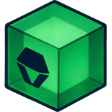
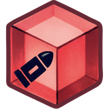
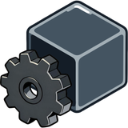
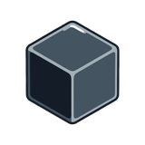
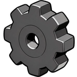
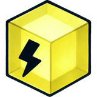
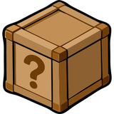
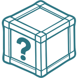
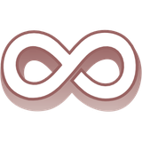
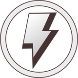
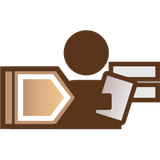
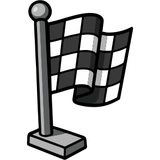
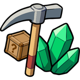
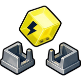
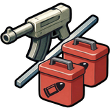
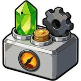
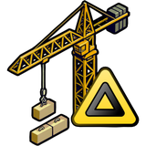
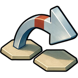
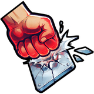
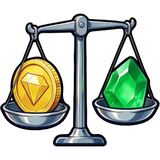
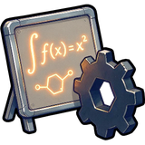
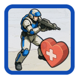
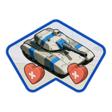
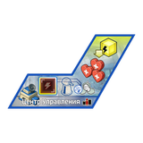
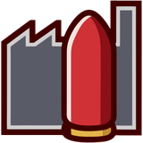
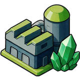
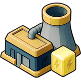
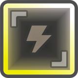
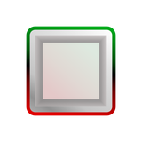
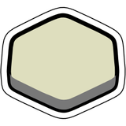
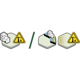
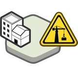
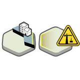
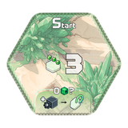
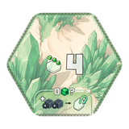
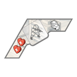
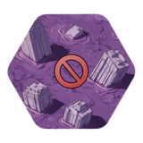
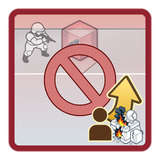
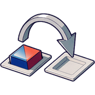
Разворот · страницы 25–26
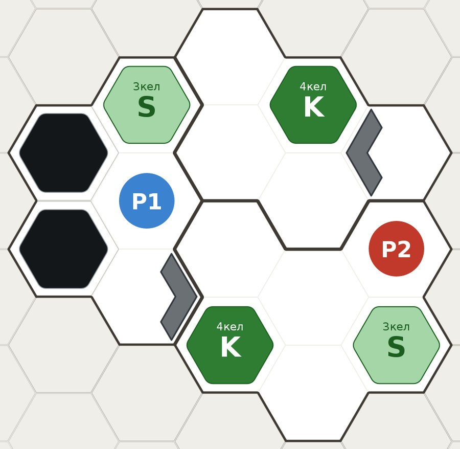
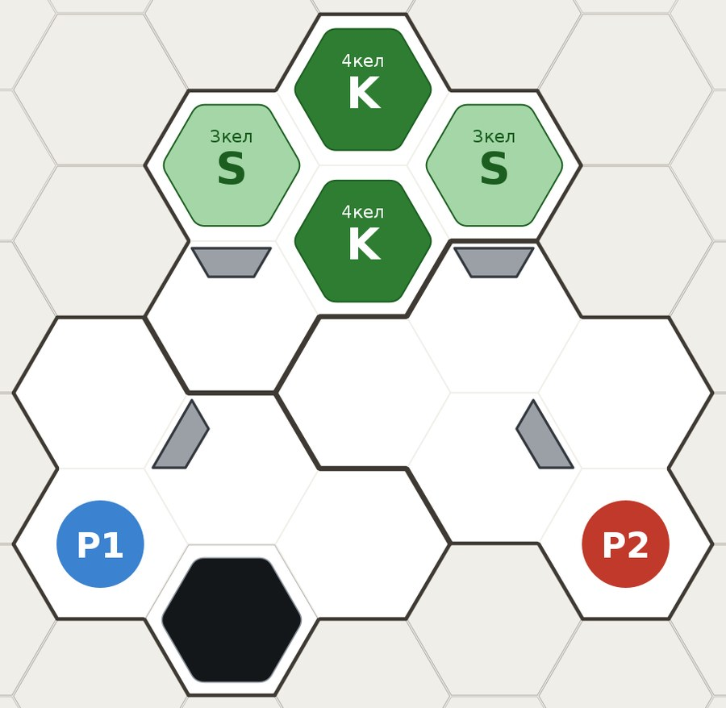
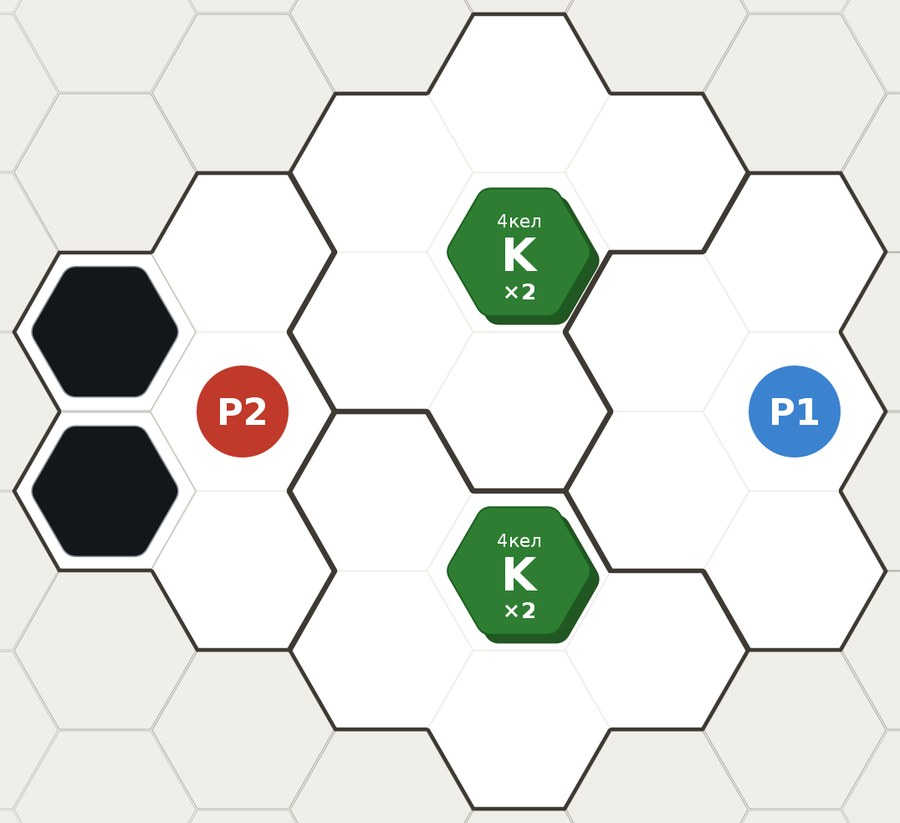
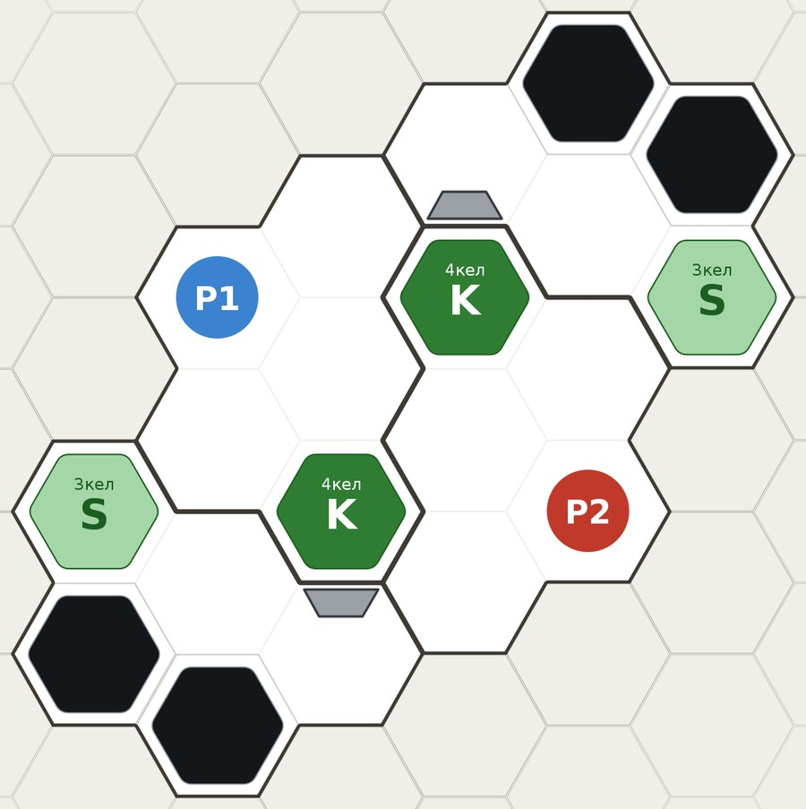
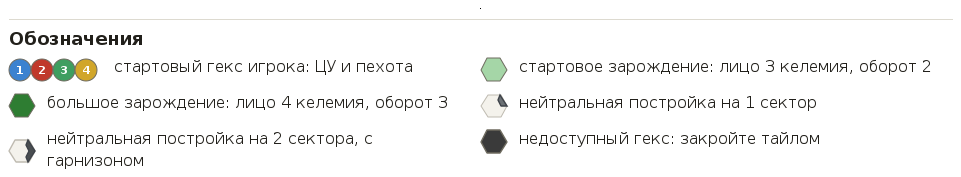
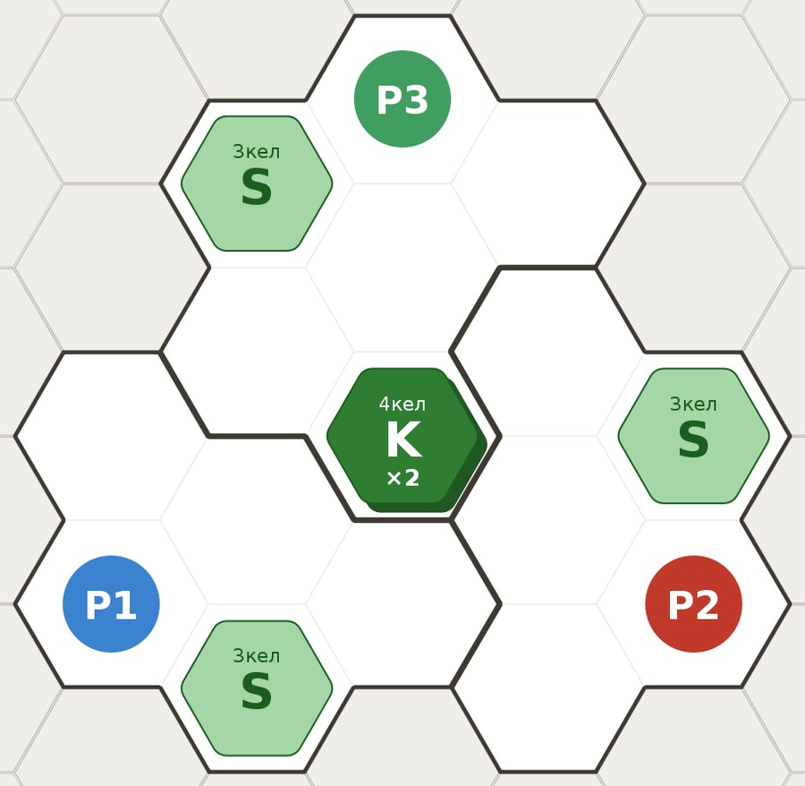
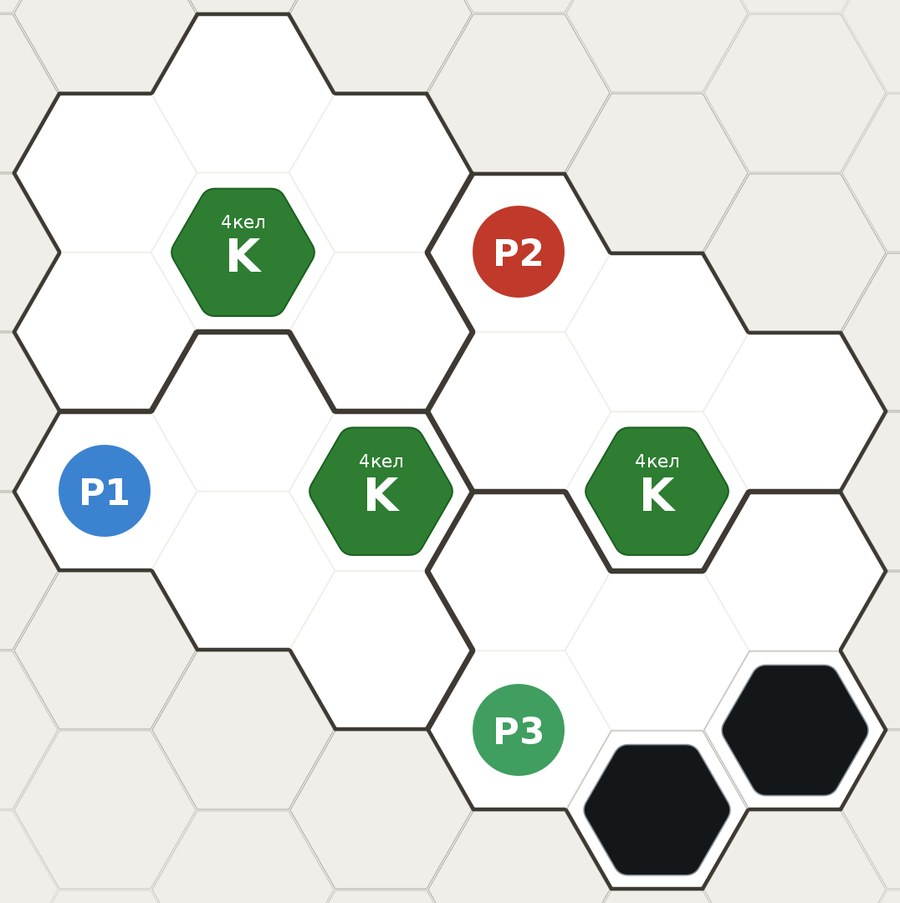
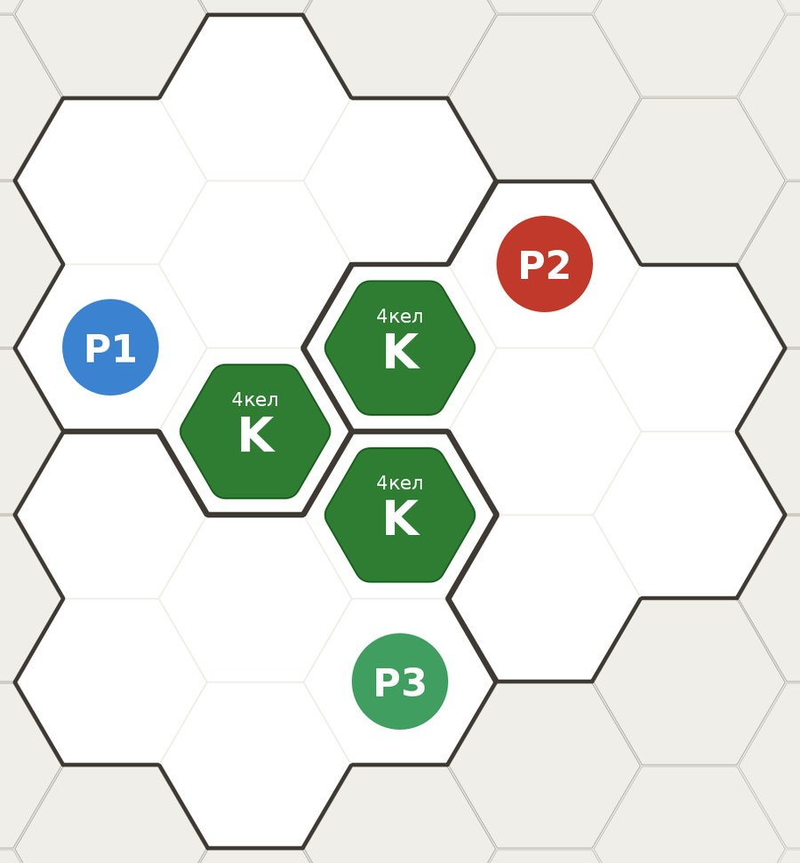
Разворот · страницы 27–28
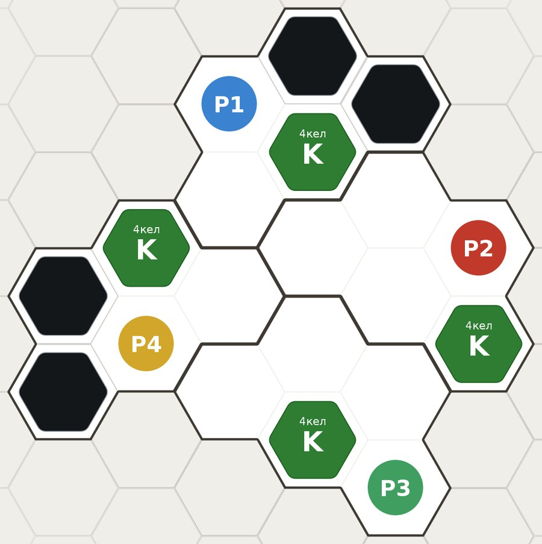
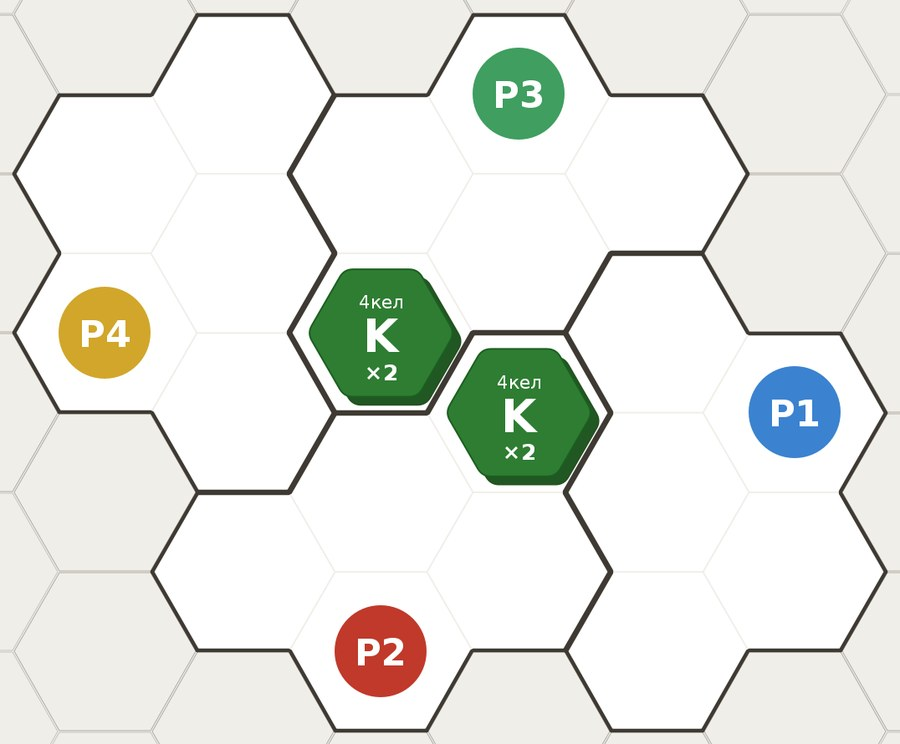
Вся игра от подготовки до подсчёта очков: раунды, пока на поле есть келемий и в колоде рынка есть карты.
Три фазы: Обновление, Управление (4 круга) и Возвращение.
Все выбирают карту приказа, потом по очереди вскрывают её и делают ход.
Действия вскрытой карты приказа и одно спец-действие.
Пять у каждого: ОСВОИТЬ, МОБИЛИЗОВАТЬ, НАСТУПАТЬ, КОНТРОЛИРОВАТЬ, ИССЛЕДОВАТЬ. Различаются у цветов только спец-плашки.
Два действия приказа. При совпадении — одно на выбор.
В этом круге такую же карту уже вскрыли раньше вас.
Название другой карты. Открыт, если её вскрыли в этом круге раньше вас: даёт одно её действие.
Одно из пяти на карте приказа: Добыча, Питание, Снабжение, Командование, Развитие. Каждое — выбор одного из двух: Добыть или Построить добытчик, Манёвр или Бой и так далее.
Одно в ход: выполнить или сжечь задание, установить или сжечь арсенал, вскрыть контейнеры, спец-способность карты, спец-плашка, поставить ЦУ.
Мелкое действие на карте приказа: Монеты, Боеприпас, Задание, Движение. Нет только на НАСТУПАТЬ.
Карта приказа, отложенная в Обновлении рубашкой вверх. На неё кладут уничтоженные вами жетоны.
Сторона уничтоженного жетона: трофеи-шестерёнки и контейнеры.
Шесть наземных секторов по краям и небо в центре.
Сектор здания, обращённый к соседнему гексу. Чужая стенка закрывает сторону для наземных войск.
Гексы с вашими зданиями и соседние гексы за вашими стенками.
Стартовый или большой; на нём келемий. Опустевший даёт награду и переворачивается.
Шаг за шагом в соседние гексы, не дальше скорости.
Эффект карты: снять жетон и поставить на другой гекс.
Ваши жетоны не на поле. Общий запас — монеты и кубики у поля.
Второе действие Добычи, Питания и Снабжения: одно здание своего вида по цене.
Разворот · страницы 29–30
Перед постройкой можно снести любые ваши здания того же вида, по монете за каждое; снесённое можно тут же поставить.
Новое здание сразу один раз добывает или выпускает, даже без энергии.
Даёт энергию: ЦУ и энергостанции на круге энергии.
Здание с ячейками энергии: ЦУ, военные здания, добытчики.
Во всех ячейках здания лежит энергия. Добывают и выпускают только запитанные.
Номер добытчика или энергостанции, 1–4: он же цена. На поле 4-й уровень даёт звезду.
Ячейки под кубики келемия, боеприпасов и трофеев. Кубик без ячейки не берётся.
Ячейка (+1 ячейка) или энергия (+1 энергия ЦУ). Золотая сторона: ячейка — ещё спец-действие каждый ход; энергия — +2; обе со звездой.
Удар одного жетона войск: универсальная — 2 боеприпаса, любой жетон; специальная — 1 боеприпас, тип с планшета или модуля.
Кубик боеприпаса на жетоне. Урона столько, какова прочность, — жетон уничтожен.
Место для пехоты в нейтральной постройке на 2 сектора.
Что надо сделать для задания. «В этот ход» — успеть до конца своего хода.
Второе условие задания: выполнено — берите и его награду.
Сбросить карту ради её верхнего эффекта. Знак ∞ — без спец-действия.
Карта арсенала лицом вверх под планшетом войск: эффект до конца партии.
Сборки (синий) — на военное здание, боя (красный) — на специальную атаку; блокировки боя и хранилища — особые.
Перевернуть модуль или жетон хранилища золотой стороной: сильнее и звезда.
Красный, синий, зелёный; ступени 1–4, вершина — 4-я. Шаг — поставить кубик на следующую ступень.
Втроём и вчетвером — второй уничтоженный вами ЦУ; всегда — вершины всех трёх треков.
Звёзды: треки, карты, золотые модули, забранные модули блокировки боя, супер-задания.
Разворот · страницы 31–32